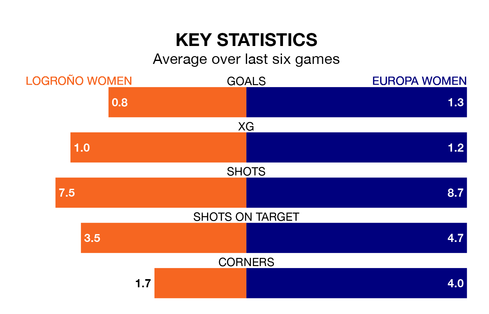

Europa Women come to play Logroño Women on Sunday in poor form, having collected just four points from their last six games.
The visitors have won one and drawn one of their last six fixtures, while Logroño have three wins and three losses.
Europa are 12th in the table after 21 games, of which they have won five and drawn two, earning 17 points.
Logroño are three places ahead of the visitors in ninth, with eight wins and one draw putting them on 25 points.
With 21 goals in 21 games so far this season, Europa are scoring at below the league average rate with 1.0 goals per game. And they are conceding more than average, letting in 44 goals at a rate of 2.1 per game.
The home team, meanwhile, are average scorers, with 1.2 goals per game. They have conceded 1.4 goals per game.
Logroño's last match was on March 16, a 1-0 win against Atlético Madrid II Women.
Europa lost 2-1 against Cacereño Women last time out, on March 17.
Updated: 10:19 (UTC), 22/03/24